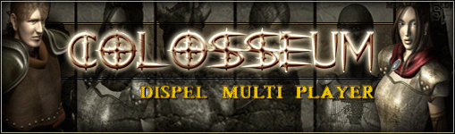

 Dawn
Dawn
|
There was a grim time absolute. The Absolute made several gods with his own hands. They created many living creatures and demons by the power they received from the Absolute. Then, he made humans in their image.
They soon began to use nature and flourished on Demon. As they completed their civilization, they grew weary of their peaceful lives. The superb adaptability granted by the gods made humans aware of the joy of domination, and they began to dominate the weak creatures. And in the early days, they fought a war to dominate each other. They killed each other and hurt each other. |
|
The gods were troubled by these humans. Some gods wanted to keep them until they were exhausted, and some said, "Let's destroy them." Then something unexpected happened.
In the meantime, Halom, the dream god, the son of Bara, the god of creation, Creatures were created. The dragons were brilliant and possessed strong powers. Numerous dragons were created by Bara and Halom, and they soon became good adversaries for the Galkadol. Many dragons and shoals lost their lives, and before the sacrifices of many dragons, the gods led by Barawa Numa began to crush Haras. In the end, Haras was overthrown by Halom and his white dragon. After the war of the gods, many of them were exiled or left Deman. And Haras was sealed in the depths of Deman. The gods who had won the war of the gods only looked back at the humans and Deman. Many human beings and lives were lost in the war of the gods. Dema was devastated by the devastation. The gods felt sorry for those humans. They decided not to interfere in Deman's history anymore. They all left Deman, and Deman sent creatures and humans I was entrusted. |
|
|
Copyright ⓒ 2000 ABALON STUDIO All Rights Reserved. |